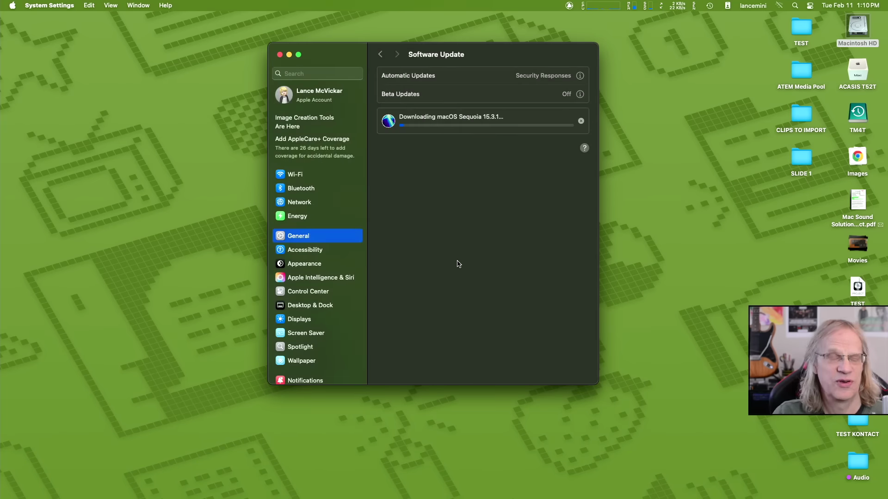
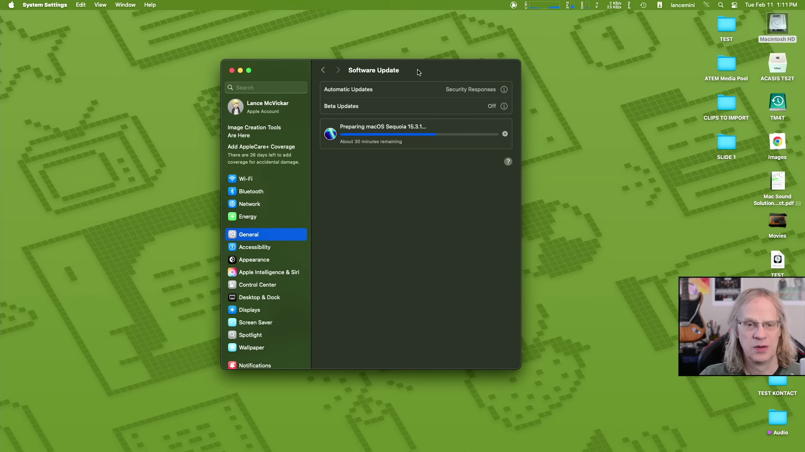
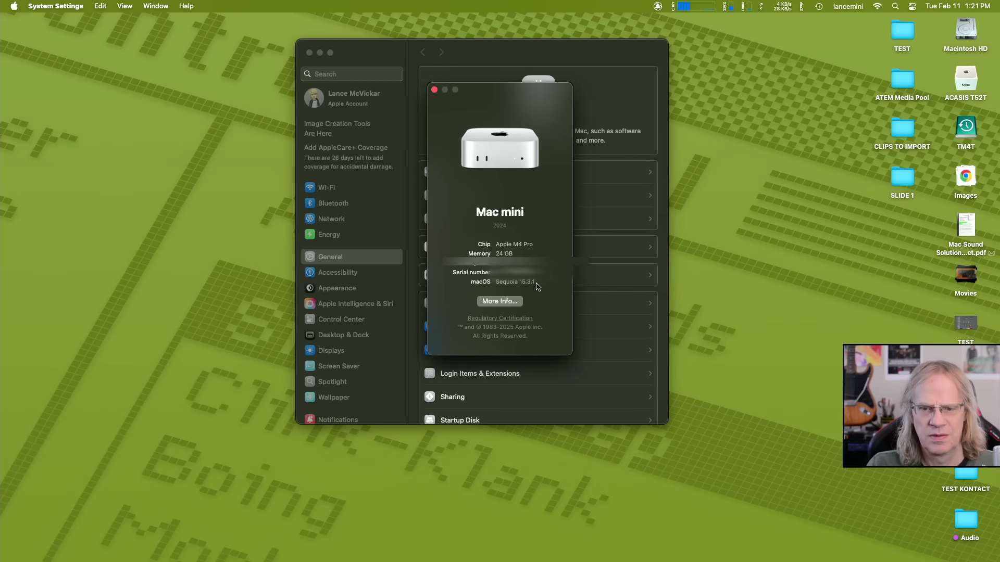
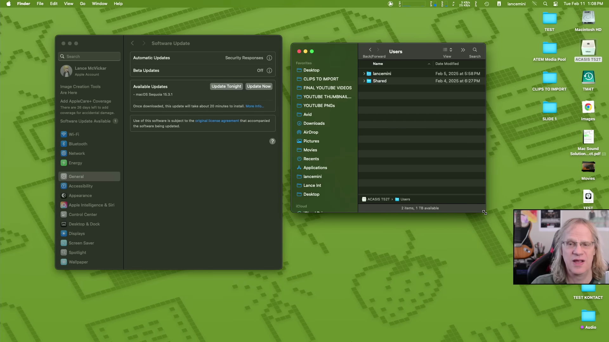

이번 포스트에서는 Lancet Mac Sound Solutions의 영상에서 언급된 macOS 15.3.1 업데이트 과정을 살펴보겠습니다. 특히 외장 드라이브를 사용하여 사용자 계정을 운영할 때 어떤 일이 발생하는지에 대해 자세히 분석합니다. 이 과정에서의 팁과 경험을 공유하며, 외장 드라이브에 대한 추천 제품도 안내합니다.
macOS 15.3.1 업데이트 시작
Lancet은 macOS 15.3.1로 업데이트를 시작하며, 외장 드라이브에서 사용자 계정으로 로그인한 상태에서 어떤 변화가 있을지를 살펴보기로 합니다.
- 업데이트 15.3.1은 15.3의 후속 버전
- 외장 드라이브에서 업데이트 진행
외장 드라이브 환경 설정
그는 Acastas 드라이브를 사용하고 있으며, 외장 드라이브에 860기가바이트를 사용할 수 있어 내부 드라이브의 부담을 덜 수 있다고 설명합니다.
- Acastas 드라이브 사용 중
- 860기가바이트의 외장 드라이브 용량
- 내부 드라이브의 절반 이하 사용
백업 사용자 계정 활용
업데이트 과정에서 그는 항상 내부 사용자 계정을 백업용으로 유지할 것을 강조하며, 이 계정은 거의 용량을 차지하지 않는다고 언급합니다.
- 내부 사용자 계정은 항상 활성화
- 내부 계정은 최소 공간만 사용
업데이트 진행 및 다운로드 속도
소프트웨어 업데이트는 빠르게 진행되며, 다운로드 속도는 약 74 메가바이트/초로 안정적이라고 언급합니다.
- 소프트웨어 업데이트는 빠르게 진행
- 다운로드 속도는 약 74 메가바이트/초
업데이트 완료 후 확인 과정
업데이트가 완료된 후 Wi-Fi가 정상적으로 연결되고 여러 애플리케이션이 제대로 작동하는 모습을 보여줍니다.
- Wi-Fi 연결 상태 확인
- 모든 앱이 정상 작동함

플러그인 및 소프트웨어 테스트
그는 Logic 프로그램에서 플러그인을 테스트하며, 외장 드라이브에 설치된 플러그인이 정상적으로 작동함을 보여줍니다.
- 로직을 통한 오디오 테스트 진행
- 외장 드라이브에서의 플러그인 작동 확인
최고의 외장 드라이브 추천
최고의 외장 드라이브를 추천하며 특히 Acastas Thunderbolt 드라이브와 Zeke Drive USB4의 성능 차이를 언급합니다.
- Acastas Thunderbolt TB501 드라이브 사용 중
- Zeke Drive USB4를 추천함Tags: #macOS 업데이트 #외장 드라이브 사용 #Acastas 드라이브 #Zeke Drive USB4 #소프트웨어 설치 #플러그인